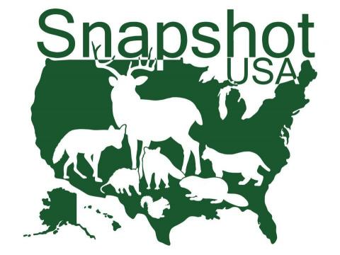

# Assign a sequence of numbers to object x
x <- 1:15
# Display it
print(x)WILD 541 – Research Design Lab
Lesson 2: R Syntax and Data Exploration
Outline
- R syntax
- What is in a dataset?
- Practice
R syntax
R Syntax
A core component in R is the object. Objects can contain almost anything: data, models, and functions.
Objects can contain almost anything, including data, statistical models, and functions. Here you will get an introduction to creating and working with simple data objects. For example, we assigned a series of numbers to an object named “x”.
By typing the name of the object and executing that line (with Ctrl+R or Ctrl+Enter), we can get R to display the current contents of a given object. Alternatively, you can use the print() function.
R Syntax
You can assign the result of a calculation to an object:
x <- 1 + 15
y <- 5.2 # second object
z <- x ^ y # third object
Notice how x now contains the new value; the previous content has been overwritten.
R Syntax
How do you find all objects you’ve created?
x <- 1 + 15
y <- 5.2
z <- x ^ y
ls() # lists objects in the workspaceYou can use objects as you would the value they contain. For example, we can create another object with the value 5.2 and then combine x and y in a calculation with the result assigned to z.
R Syntax
Objects can also contain other types of information, including strings and boolean characters (TRUE/FALSE). Objects may contain only a single value, e.g., objects x and y. But objects can contain much more, including entire data sets. You will learn about additional types of variables later.
x <- "leopard"
y <- FALSE
class(x)
class(y)
Note
String variables are surrounded by quotation marks; TRUE / FALSE are not.
R Syntax: vectors
A vector is a sequence of values. Use c() to combine values:
# Numeric vector
mass_kg <- c(38, 217, 7, 40)
# Character vector
species <- c("leopard", "bear", "fox", "wolf")
# Logical vector
us_range <- c(FALSE, TRUE, TRUE, TRUE)
R Syntax: dataframes
A dataframe stitches vectors together as columns of a table:
mass_kg <- c(38, 217, 7, 40)
species <- c("leopard", "bear", "fox", "wolf")
us_range <- c(FALSE, TRUE, TRUE, TRUE)
sp_data <- data.frame(species, mass_kg, us_range)
sp_dataWhat is in a dataset?
Snapshot USA
Snapshot USA is a coordinated monitoring of mammals (and birds) via camera traps across the US.
Today we explore a subset of this processed dataset.

Overview
To analyze data, you need to get them into the R workspace. Typically, this means loading data from external files (e.g., .txt or .csv) and assigning them to an object. Eventually, you may also want to export an R data object to an external file, for example, after creating or processing data in R. There are numerous alternatives for loading and exporting data; next are just a few examples.
Loading data
First, let’s empty the workspace, in case there are objects from a previous analysis, which could interfere with what we are going to do now:
# Clear workspace
rm(list = ls())Make sure the required R packages (also called libraries) are installed and loaded. In this example, we can use the ”readr” or ”utils” package to load our .csv file. Then, download the input file and make sure it is in the current working directory, and load it into R as shown below.
# Load the snapshot_usa dataset from GitHub
library(utils)
url_remote <- "https://raw.githubusercontent.com/"
path_git <- "MTourani/WILD541_F2026/refs/heads/main/"
file_name <- "snapshot_usa.csv"
snapshot_usa <- utils::read.csv(paste0(url_remote, path_git, file_name))Explore data
You can check that the file has been loaded correctly by displaying the entire object or, if it is too unwieldy, the first 6 rows with function head():
- Each row = one observation
- Each column = one variable
head(snapshot_usa)
Tip
What do you think the function tail() does?
Explore data
This object contains a data frame, which has two dimensions (rows and columns).
# How many rows and columns?
dim(snapshot_usa)
nrow(snapshot_usa)
ncol(snapshot_usa)Function dim() returns the size of each dimension (number of rows and number of columns).
Both rows and columns can be named; dimnames() returns these names.
# How many rows and columns?
dimnames(snapshot_usa)
Explore data
You can also specify which rows you want shown by providing the row index in square brackets.
# Return rows 1 through 3
snapshot_usa[1:3, ]Explore data
You may only want to inspect a certain column in a data frame. Here are different ways to have R return a column of a data frame:
# Three ways to access a column
snapshot_usa$Species_Name # by name with $
snapshot_usa[, "Species_Name"] # by name with []
snapshot_usa[, 3] # by index
Tip
R is case sensitive and the lower/upper case should match the exact column name.
Quantitative summaries
We used summary() in previous class. Similarly, we can use functions mean(), median(), sd() to get summaries of any dataset.
For example, we can find the mean number of animals in the camera trap images using mean() and use round() to show whole numbers.
mean(snapshot_usa$Count)
round(mean(snapshot_usa$Count), 0)
Warning
Why won’t mean(snapshot_usa$Species_Name) work?
Class of variables
To find out what type of data you are dealing with, use the function class().
class(snapshot_usa$Count)
class(snapshot_usa$Species_Name)
class(snapshot_usa$Age)Sort and order
You may want to inspect a sorted column, or find the lowest or highest value in your data frame.
# Sort a column by spa
head(sort(snapshot_usa$Species_Name))
# Reorder the whole dataframe alphabetically by species
snapshot_usa[order(snapshot_usa$Species_Name), ]Getting help
If you are unsure about how to use a function, you can get help from R’s help facilities. For example, if you know the name of a function you can get the associated help pages displayed simply by typing “?” followed by the name of the function (e.g., ?order). If you are not sure about the function name, you can do a “fuzzy” search using “??” followed by the word that you are looking for.
?order # help for a specific function
??aggregate # fuzzy searchTallies
The function table() is a simple way to tally your data. For example, you can get the number of images per age class like this:
table(snapshot_usa$Age)
More complex tallies can also be obtained, for example the number of observations associated with the different combinations of “Age” and “Class”.
table(snapshot_usa$Age, snapshot_usa$Class)Tallies
The function table() only counts the number of observations associated with different combinations of variables. We can use aggregate() if we want elements in a given category summarized differently. For example, we can calculate the mean number of animals in the camera trap images by age class:
# Mean count by age class
aggregate(Count ~ Age, data = snapshot_usa, FUN = mean)By adding additional variables on the right side of the formula, we can break things down further:
# Break down further by species
head(aggregate(Count ~ Age + Species_Name,
data = snapshot_usa, FUN = mean))Export data
You can take the modified data frame and export it as a comma-delimited text file that can then be opened with other software.
# Export as CSV
utils::write.csv(snapshot_usa, "snapshot_usa.csv", row.names = FALSE)
# Export as RData
save(snapshot_usa, file = "snapshot_usa.RData")Reload and inspect
Exporting your data as an R data file ensures that all information is stored and can be retrieved exactly the way it was when you last worked with it in R. You can confirm this by removing the object from the workspace and then loading the .RData file.
rm(snapshot_usa) # remove from workspace
load("snapshot_usa.RData") # reload
head(snapshot_usa)Practice
Your turn
Practice 1
Using snapshot_usa:
- How many camera trap images were recorded?
- How many species had at least one record?
- How many birds and mammals were recorded? (Hint: tally
Class) - How many images contained humans (pedestrians, bicycles, vehicles)?
- How many images contained domestic animals?
Your turn
Practice 2
- Load your own data into R and inspect them.
- Add or remove a column; save as
.RData. Inspect the output. - What are the dimensions of your dataset?
- How many columns are numeric, logical, or character?
- Use
table()to tally observations. - Use
aggregate()to summarize in different ways.